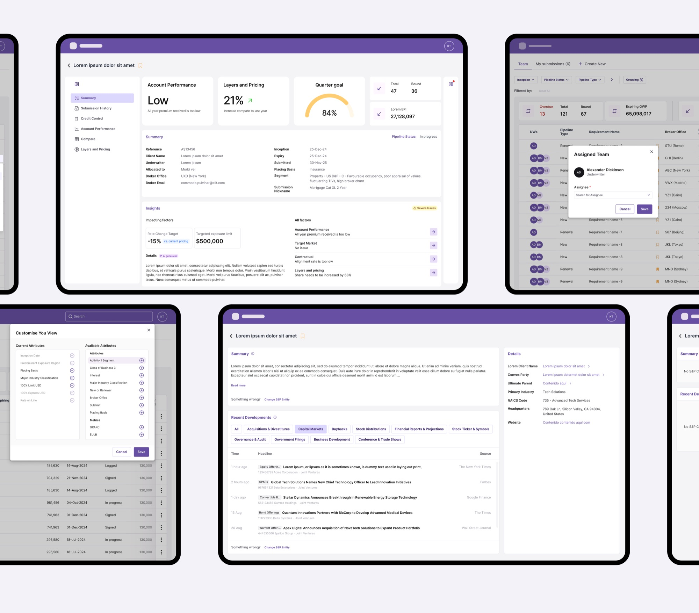
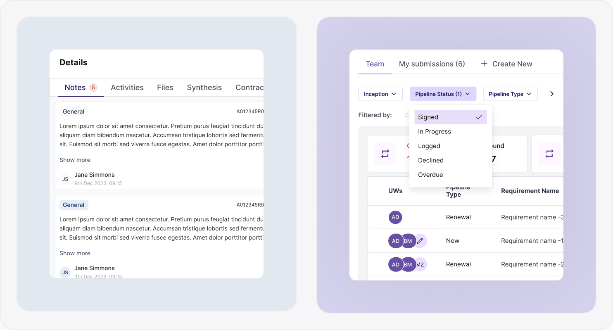
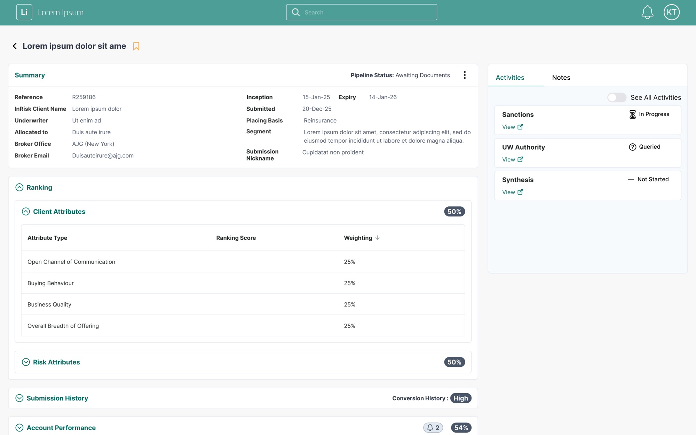
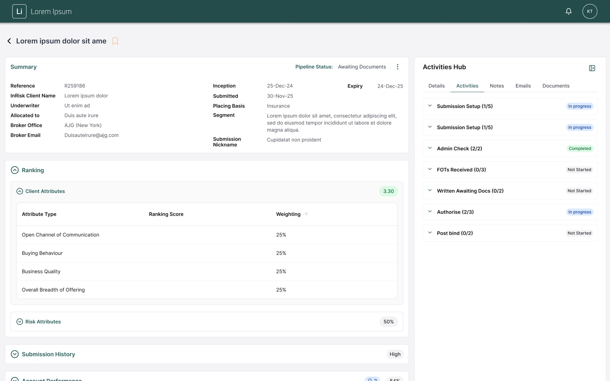
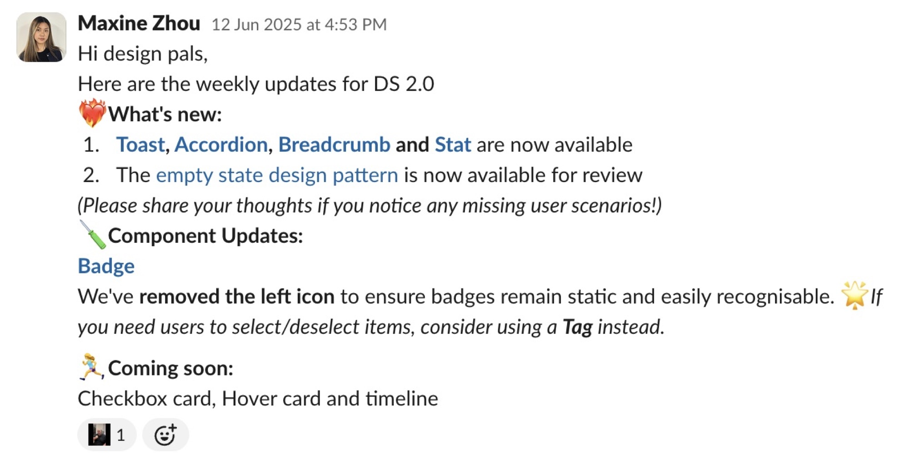
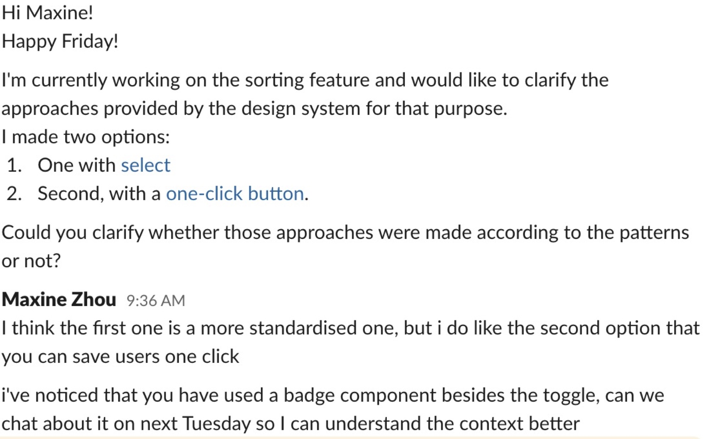
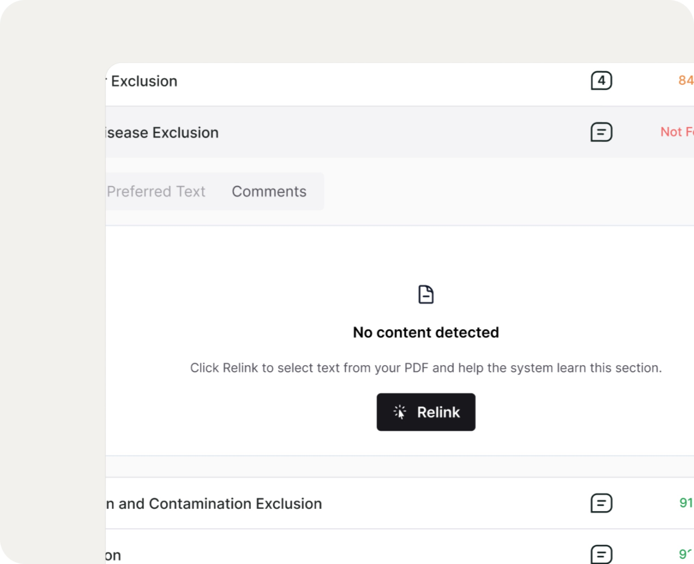
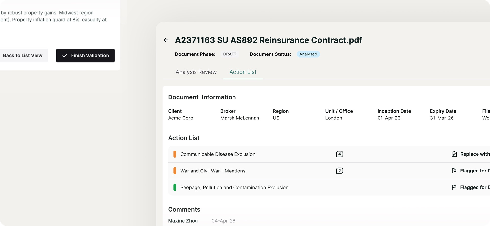

Maxine Zhou
Product Designer
maxine-zhou.com
Product designer working on AI-powered SaaS.
- Improving underwriting efficiency through behaviour-driven design
- Enterprise design system migration
- AI-Augmented Contract documents Analysis Platform
About
I’m Maxine, a London-based product designer who designs complex products. I’ve designed enterprise AI tools, design systems and a 0 to 1 hardware product. I spent two years designing B2B tools for Convex Insurance, including an AI contract analysis product, an insurance platform (used by 18 underwriting teams), and a design system shared by 10 designers across 3 agencies.
I’m comfortable with ambiguity. I’d rather form a point of view and test it than wait for certainty, and I like owning work from the first question to launch. My background in fine art and product design is why I care about both craft and how things actually get built.
- B2B SaaS
- UX/UI
- InsurTech
- Product Design
- 2025
Launchpad
Improving underwriting efficiency through behaviour-driven design
Turning user data into a smarter navigation model + dynamic viewport to provide a better decision environment.
Overview
My Role
Product Designer
Responsibilities
- Next version of this product
- UX analysis & insight synthesis
- Interaction design
- Information architecture
- Stakeholder alignment
The Product
An internal underwriting application for insurance teams to review and triage submissions, manage workflows, and make faster and more confident decisions.
Usage at a glance
(In a typical month)
What the data revealed
- Only 46.1% of users entered the submission detail page
- The Back button was the most-used interaction on submission detail
- Users frequently looped between pipeline and submission detail
- Submission detail was used selectively to access specific context, especially summaries and notes
Why Back button dominance?
Fast comprehension first, depth on demand.
The pipeline view functioned as the true decision workspace, while the submission detail page acted as a short-term inspection layer.
Underwriters relied on the pipeline page for orientation and comparison, opening submission detail primarily to verify context before returning to continue their review.
Design direction
- 01Rebalanced hierarchy to surface key signals closer to the pipeline.
- 02Cut navigation overhead with pre-filtered views and filters-on-demand.
- 03A contextual Details drawer for files, AI insights, history and notes.
- 04An adaptive viewport for dense analysis without losing context.

Reducing noise, preserving control
I designed a 'filters-on-demand' system that reduced visual complexity while maintaining flexibility. Frequently used filters were prioritised, and reusable filter presets allowed underwriters to quickly re-establish context across sessions.
I then consolidated key submission information into a contextual drawer, reachable without leaving the pipeline.

Adaptive viewport for high-density data
To accommodate dense tables, I designed an adaptive viewport that supports uninterrupted analysis while preserving quick access to workflow context and collaboration tools.
Impact
With over 224 hours of monthly usage, even small improvements could scale quickly. Reducing just one minute per session could save over 45 hours per month across underwriting teams.
Due to roadmap priorities, this work was positioned as a future optimisation, establishing a clear, data-backed direction for improving underwriting efficiency at scale.
- Design System
- Design Ops
- InsurTech
- Strategy
- 2025
Convex Design System
Enterprise design system migration
Main contributor of a design system across a 16-product insurance ecosystem, cutting custom components by 94% and establishing governance across three design agencies.
Overview
Our Design Team
- Design System Designer (me)
- Design Manager
Timeline
March – December 2025 (10 months)
My Core Deliverables
- Four products migrated, three in active progress
- Design library fully built, aligned with Storybook
- Documentation and governance frameworks established
- Design team culture transformed from siloed to collaborative
- Client set up to scale the system independently
Impacts
The Challenge
The client operated 16+ products built by multiple contractors, with significant operational challenges:
- 83% of design work required custom components, due to the limitations of the existing design system
- Three separate design agencies worked in silos, with inconsistent practices
- Designers skipped collaboration meetings and worked independently
- Fragmented user experiences across the product portfolio
- No clear governance on when or how to extend the design system
What my role brought
- Build and organise the design library and documentation
- Provide design system services and support to designers across agencies
- Establish governance processes for consistent adoption
- Lead a pilot migration to demonstrate value and approach
- Transform team culture from siloed to collaborative
Before
Ad-hoc components, inconsistent spacing, and a narrower activities panel with no tab structure.

After
Design system components throughout, semantic tokens, and a fuller Activities Hub with five tabs.

Impact for the business
- Drastic reduction in design and handoff time as system coverage grew
- A migration approach proven through a pilot that other teams can replicate
- The team now owns and evolves the design system together
Reflection and learnings
- Design system migration is as much about people and process as components. Building trust by supporting designers proactively is the key.
- I came to understand the importance of change management: balancing consistency against designers' real needs.
- Stakeholder communication and systems thinking are essential.
- Finally, I learnt to choose the battle. We paused migration on one product with fewer than 10 active users — its designers were reluctant to migrate our way, and re-onboarding them at every check-in was costing more than it returned.
Weekly updates kept adoption visible
Release notes in the open, every week. Designers stopped being surprised by a change, which is most of what trust in a design system actually is.

The real signal of success
Designers coming to the system before building around it. Nobody asked them to — the question simply became easier than the workaround.

- AI / ML
- B2B SaaS
- Workflow
- InsurTech
Analyser
AI-Augmented Contract documents Analysis Platform
Owned end-to-end design of an AI-assisted contract analysis platform, bringing workflows scattered across 5+ tools into one product. The product has since been white-labelled and sold as a service by the AI development partner.
Overview
My Role
Product Designer
Key Outcomes
- Streamlined contract review during critical renewal periods
- Designed Continuous AI Training in workflow that felt natural to users
- Built user trust through transparent AI verification design
Additional Complexity
- Remote collaboration with a dev team in France
- Tech constraints: LLM latency and inability to build a specific layout
- Ecosystem consistency: aligned with two products and fed insights into a core product
The Product
AI-assisted contract analysis platform, bringing workflows scattered across 5+ tools into one product.
Fragmented, High-Stakes Workflows
During busy renewal periods, underwriters analyse hundreds of reinsurance and insurance contracts under tight deadlines. Their workflow is chaotic—constantly switching between:
- Contract PDFs
- Email chains
- Notes documents
- Slack conversations
- Dropbox files
Need a solution that could
- Make contract review instantaneous, not time-consuming
- Simplify checking against complex underwriting rules
- Reduce compliance risk and financial exposure
How might we accelerate contract analysis without compromising thoroughness, accuracy, or user confidence in AI-generated insights?
Research and Discovery
I conducted stakeholder interviews with underwriters and product managers to understand their workflows, pain points, and needs during high-pressure renewal periods.
Key Insights that shaped design
- Navigation must be instantaneous and mirror document’s natural flow
- Users question AI accuracy, design should communicate transparency and verifiable sources
- AI assistance should feel like productive work, not extra overhead
Design Decision
Detected wording is compared against preferred language in a clear side-by-side view with concise risk summaries, enabling decisions in seconds.
AI-Powered Comparison with Source Verification
Human-in-the-Loop Machine Training
Underwriters can quickly verify or relink AI-detected text within the “Text” view, embedding feedback directly into their normal review workflow.

Natural Review Workflow
Key validation actions are surfaced at the point of review, enabling one-step decisions and preserving underwriters’ analytical flow.
Action List for Faster Collaboration
Instead of jumping between components to recall what needs discussion, underwriters get a consolidated view of every flagged item, suggested alternative, and comment at a glance. When everything checks out, a single 'Finish Validation' click closes the loop.

Impact
Contract review was streamlined through the critical renewal periods, when volume peaks and turnaround is tightest. Continuous AI training was built into the workflow itself, so every correction an underwriter made improved the model without interrupting their review.
The product has since been white-labelled and sold as a service by the AI development partner.